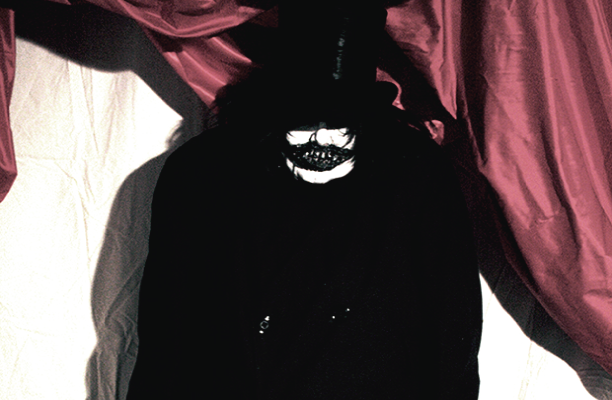
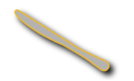
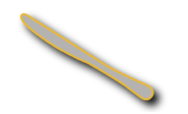
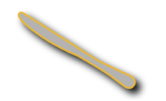

Project #1: Maze or Manifesto?
Posted: October 6th, 2015
To the Labrynth Project 1: Warning There is No Direct Way to Return Here
The web is a large place where there are new sites and pages to be discovered just one more click away. Though the web may not have been setup as a labyrinth it certainly has become one over the years since its birth. Our small labyrinth illustrates how a link can take you in many directions through the internet with a new link made every second. A “Java applet... that is programmed, over the course of many trillions of years, to run through every possible image that can be formed within a 32 x 32 grid” (Tribe, 9). Tribe and Reena presented the logo applet in a way that demonstrates that there are many different possible ways to illuminate the pixels on a screen for a logo. However, the patterns overall have little individuality as each pattern has only one pixel difference from the last. There is or will be a reproduction of every page on the internet and the differences will be so slight it is hard to know which one was the first. “The traces of the first can be revealed only by chemical or physical analysis which it is impossible to perform on a reproduction; changes of ownership to a tradition which must be traced from the situation of the original.” (Benjamin, 3) Every duplication deludes the original making it seem to be another reproduction. As with our labyrinth every quote is a famous quote known to many people, they are quotes that people repeat and often will say incorrectly. Our labyrinth represents how the original can change, to a degree, just by associating a quote with someone else. As with our labyrinth we turned the inspirational quotes to be a bit more humorous in nature just because of there change in authorship. So this is why reproduction happens and they can be different but not so drastically that it makes the pages something entirely new.
Work Cited:
Tribe, Mark, and Reena Jana. Art in the age of Digital Distribution. Print.Benjamin, Walter. The Work of Art in the Age of Mechanical Reproduction. Germany: Hannah Arendt, 1935. Print.
The brainstorming process for this project.
Project #2: Mapping
Posted: October 11th, 2015
The map below was created in a similar fashion to how Mark Lombardi made his works. “My purpose throughout is to interpret the material by juxtaposing and assembling the notations into a unified, coherent whole. In some cases I use a set of stacked, parallel lines to establish a time frame” (Lucarelli). Lombardi's approach seemed to be the best way to create my map because the labyrinth that the map represents is already connected in a similar way to how Lombardi's mappings were. In retrospect, in a group of five we created a labyrinth, a set of HTML pages that were designed to connect through hyperlinks. The cartography represents each possible path through the labyrinth. The colors of the connecting lines represent the colors used on each page. The connector color chosen indicates a direction, an invisible arrow, as the color comes from the page which is the start point of that arrow. The single blue circle in the map represents the start of the labyrinth, also the blue color was meant to indicate that the circle is a hyperlink. Each circle is meant to represent a city, or page, on this map as they relate to one another and reside in the same country, or project, but they are still their own cities that have their own style and traditions. They are connected through their roads and the rulings, or layout, that each follow. The little blue circle was meant so that none of the roads intersected in an awkward way. The circle represents the connection between each page of the labyrinth and how they cannot cross each other or change directions at this meeting point just stop and say hello. This map illustrates how the pages work together, share similar traits, and that they can stand alone without the others. Therefore, just as Lombardi creates his integrate maps in ways that connect each aspect of his ideals, my simpler map demonstrates that same connection between every idea relating to the labyrinth.
Work Cited:
Lucarelli, Fosco. "Mark Lombardi’s Narrative Structures and Other Mappings of Power Relations". Socks, 22 Aug. 2012. Web. 10 Oct. 2015.
Blue text in image represents a clickable hyperlink
Project #2: Critique
Posted: November 22nd, 2015
- hard to read the text
- sees connection between the pages
- the shape or cluster to encompass the project
- sees the individual nodes of the pages and the bigger node that represents the projects
- the esthetics show that the map represents a country specifically a road map
- joining of cartography with conventional maps
- contradictions where the projects don’t connect which takes away that the map loses its road map convention
- the connections and mapping are clear but why some do not connect is not entirely clear why
- consider this as a chronological order or a dependency
- shows that the project 2 is the center so the rest surround them
- zooming in of the project 2 image
- star is perceived as this is a you are here indicator
- reminds you of an older website site maps
- have the star move around as we move through the projects
- create animation of sort to illustrate the star movement and the zooming in and out of the various project points
- shows lots of possible ways the map can change in the future
Project #3: Processing
Posted: October 18, 2015
Edgar Allen Poe: Processing Applet
To begin with the idea for the Edgar Allen Poe Processing Applet started out simple with just the idea of mixing images with the poems text. As I sat down and thought more about what to do with this concept I figured I could replace some of the text with the images so that then the poem would still exist with the same meaning but instead be told through images. To allow the poem to be seen I made the images interactive and so you can click on the images to make the original text poem appear. As this made the poem interesting the idea did not incorporate the idea of Brion Gysin and his cut-up method of creating poems, which I wanted to incorporate into the project. As William S. Burroughs explains how Gysin's method works “Take a page... Now cut down the middle and cross the middle. You have four sections: 1 2 3 4 . . . one two three four. Now rearrange the sections placing section four with section one and section two with section three” (Burroughs). So I wanted to use Gysin's cut-up method because I thought it would add more to the page and it would go well with the mystery of the poem itself. The reason for the second poem was just so that I would not ruin my design scheme with a standard restart button so I added that poem and clicking on the blue text “Restart?” sets back the images and the original order of the poem. Because of my design scheme a dark poem seemed to be the best fit to help tell the story of what was happening on the applet. Essentially, my Processing Applet is a digital representation of Brion Gysin's cut-up method as the applet changes the layout of the poems text and the sorting hat adds the more historic aspect of how he decided the order of his cut-up poems.
Work Cited:
Burroughs, William S. "The Cut-Up Method of Brion Gysin". briongysin.com, 16 Oct. 2010. Web. 18 Oct. 2015.

The brainstorm flow chart for Project #3
Project #4: The Ghost in the Machine?
Posted: October 30, 2015
The 300 word discription
Project #5: Mixtape
Posted: November 1, 2015
Flip books might seem simple at first glance but the details that flip books can convey can be very complex. With the flip book shown in the video below it first as a short animation I made with Blender, a 3D modeling program. The animation was reduced to 25 frames. This reduction caused some lose in the movement of the animation but these 25 frames still illustrate the same animation. The animation is shown in a linear progression as the frames come one by one. In Understanding Comics Scott McCloud talks about how there is an essence of time and space happening between each panel of a comic. Though a flip book may be a bit more like a film than a comic but the feeling of time is still present. The reduction in the frames, as mentioned before, caused a few gaps in the movement of the characters and so the viewers must fill these gaps mentally. Even though some of the frames may no longer actually exist the imagined frames are essentially the same presenting the same linear progression. So animations and comics are told linearly as mentioned by McCloud, “Comics readers are also conditioned by other media and the "Real Time" of everyday life to expect a very linear progression. Just a straight line from point A to point B” (106). Just as the story in the flip book even if you start from the bottom of the book instead of the top the frames still move forward in one linear moment. Why this is important is because even though I originally made my flip book on the computer as a standard computer animation converting this to a simple flip book did not result in the lose of the linear motion or the story that is being conveyed. hus the only difference is that as the viewer you are doing the computer's job by cycling through the frames to see the movement of the characters in the flip book and showing every frame that makes up that movement..
Work Cited:
McCloud, Scott. Understanding Comics The Invisible Art. United States: New York, 1993. Print.
Project #6: Animation (final)
Posted: November 11th, 2015
“A glitch occurs on the occasion where there is an absence of (expected) functionality, whether understood in a technical or social sense“ (Menkman, 10). As explained by Rosa Menkman glitch art is a new way to express artistic concepts. Throughout my work there are various glitches and bugs. With the start of my piece everything seems to be a bit off putting because of the man. As soon as the canvas is clicked then that off putting feeling is enhanced. Each time the applet is revisited the switch between the two canvas images (the glitch) is different sometimes it becomes almost absent and others it becomes very twitchy. The initial look of the piece was based on a movie I recently watched called The Babadook. A movie about a dark figure that kidnaps children. And this has an eerie relation to the next canvas image look but it is only clear once you enter the game. At first the hotdog when it appears maybe humors as most people do not eat their hotdogs with a utensil. However, the thoughts about what the hotdog means changes once you enter the game, Cannibowl City. To give the idea that maybe this hotdog is not made from cows. The glitch that happens (side note, hidden glitches can be found throughout Cannibowl City) is meant to add to the questioning of what is it that I am really looking at and why is everything going so wrong. By using what a glitch does to the mind, as in how it makes people experience something unexpected, adds to the fact of playing the game where you must do something you would never consider doing, which is cannibalism. Thus, the use of the glitch is to add to the eerie and unsettling aspect of the story my piece is trying to convey.
Work Cited:
Menkman, Rosa. "The Glitch Moment(um)". Network Notebooks. Amsterdam, October 2011. Web. 1 Dec. 2015.
 


 


Clicking the canvas multiple times should reduce the amount of the glitching if it is significantly bad.
Project #7: SoundWalk
Posted: November 11th, 2015
Something that seems to be consistent with the Ultra-red assignments is that most students did not want to participate or lead. At the Ultra-red talk Learning Exodus: Education, Value, and Resistance one speaker posed questions and often there would be silent pauses until someone decided to speak or the Ultra-red speaker would change to a new subject. Some probably didn't know how to answer, and others didn't care to respond. Each person had their own reasons for not participating but the main point is that with all the people there little conversation happened. Additionally, while making the original recording for the sound walk there also was little interest for the group to lead or participate. As suggested by the audio clip the group stood waiting to see who would lead first. This silence happened again each time a new leader needed to walk, each wait shorter then the first. Hence, it seemed apparent that no one really wanted to participate or lead. In the Five Protocols for Organized Listening other students were asked to participate however some certainly had no interest, "Moving around the room if I found a group had become stuck or arrived at a proposal through little effort I turned their ideas into questions. In other instances a particularly dominant individual forced the group to follow his or her lead" (24). The lack of participation seemed to be mostly the act of students especially the younger students. In any case when students are asked to participate in something they have no interest in they will put little effort into the work. This is not to say that students do not care about anything just that they will decide when, if at all, they will participate or lead.
Work Cited:
Blaney, Elizabeth, Manuela Bojadžijev, Pablo Garcia-Hernandez, Janna Graham, Chris Jones, Elliot Perkins, Dont Rhine,
Robert Sember,
Walt Senterfitt, Ceren Türkmen, and Leonardo Vilchis. "Five Protocols for Organized Listening". Ultra-red.
Los Angeles, 2013.
Web. 11 Nov. 2015.